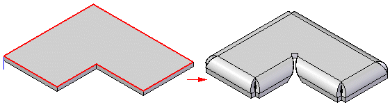
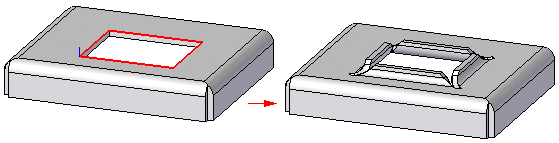
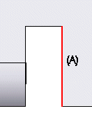
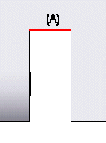

General tab (Contour Flange Options dialog box)
- Tab Options
- Bend Radius
-
Specifies the bend radius value for the feature you are constructing.
- Use Default Value
-
Uses the default value specified on the Options dialog box.
- Override Global Value
-
Enables the associated value list so you can override the default value specified on the Gage tab of the Material Table dialog box.
- Bend Relief
-
Specifies that you want to apply bend relief to the source face from which the flange is constructed. When you set this option, you can also specify whether the bend relief is round or square, and whether the bend relief applies to only the material adjacent to the bend or to the entire face.
You must select this option if you select the Chain option to create a contour flange along concave corners

or, along interior edges.

- Extend Relief
-
Specifies that you want to apply bend relief to the entire face when set. When cleared, the bend relief is applied only to the material adjacent to the bend. This option is useful when the flange you are constructing is recessed between adjacent faces.
- Square
-
Specifies that the internal corners of the bend relief are square.
- Round
-
Specifies that the internal corners of the bend relief are round.
- Depth
-
Specifies the depth (A) of the bend relief.

The depth is measured from the bend of the contour flange and is applied to the source face from which the flange is constructed.
- Width
-
Specifies the width (A) of the bend relief.

The width is measured from the end of the contour flange and extends outward.
- Neutral Factor
-
Specifies the neutral factor for the bend.
- Corner Relief
-
Specifies that you want to apply corner relief to flanges that are adjacent to the flange you are constructing. When you set this option, you can also specify how you want the corner relief applied.
- Bend Only
-
Specifies that corner relief is only applied to the bend portion of the adjacent flanges.

- Bend and Face
-
Specifies that corner relief is applied to both the bend and face portions of the adjacent flanges.

- Bend and Face Chain
-
Specifies that corner relief is applied to the entire chain of bends and faces of the adjacent flanges.

- Save Default
-
Saves the current settings as the default. Saved defaults will be used the next time you use this command. If you do not save the current settings as defaults, the previous default settings will be used.
- Save Feature Default
-
Saves the current settings as the default. Saved defaults will be used the next time you use this command. If you do not save the current settings as defaults, the previous default settings will be used.